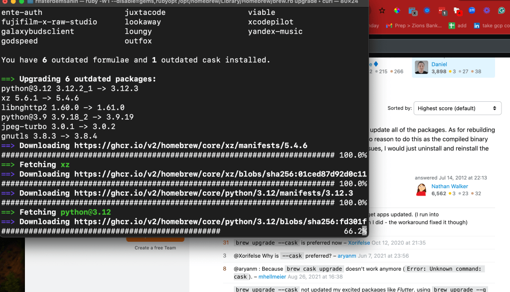

homebrew updates

https://apple.stackexchange.com/questions/56419/how-can-i-update-everything-installed-through-homebrew-after-osx-upgrade
6 packages in one go
Last login: Sun Apr 7 14:02:26 on console
rifaterdemsahin@Rifats-MacBook-Pro ~ % brew upgrade
==> Auto-updating Homebrew...
Adjust how often this is run with HOMEBREW_AUTO_UPDATE_SECS or disable with
HOMEBREW_NO_AUTO_UPDATE. Hide these hints with HOMEBREW_NO_ENV_HINTS (see `man brew`).
==> Homebrew collects anonymous analytics.
Read the analytics documentation (and how to opt-out) here:
https://docs.brew.sh/Analytics
No analytics have been recorded yet (nor will be during this `brew` run).
==> Homebrew is run entirely by unpaid volunteers. Please consider donating:
https://github.com/Homebrew/brew#donations
==> Auto-updated Homebrew!
Updated 2 taps (homebrew/core and homebrew/cask).
==> New Formulae
c-blosc2 liblc3 overarch rustcat
dissent libscfg parsedmarc sysaidmin
ffmpeg@6 logdy policy_sentry tartufo
gitu manim protoc-gen-js uni-algo
ingress2gateway mantra rage valkey
jnv msieve ratchet vfox
jtbl navidrome redict
lexido oj rtabmap
==> New Casks
arctic halloy phoenix-code
boltai hhkb-studio requestly
capcut ireal-pro starnet2
clearvpn irpf2024 toneprint
ente-auth juxtacode viable
fujifilm-x-raw-studio lookaway xcodepilot
galaxybudsclient loungy yandex-music
godspeed outfox
You have 6 outdated formulae and 1 outdated cask installed.
==> Upgrading 6 outdated packages:
python@3.12 3.12.2_1 -> 3.12.3
xz 5.6.1 -> 5.4.6
libnghttp2 1.60.0 -> 1.61.0
python@3.9 3.9.18_2 -> 3.9.19
jpeg-turbo 3.0.1 -> 3.0.2
gnutls 3.8.3 -> 3.8.4
==> Downloading https://ghcr.io/v2/homebrew/core/xz/manifests/5.4.6
######################################################################### 100.0%
==> Fetching xz
==> Downloading https://ghcr.io/v2/homebrew/core/xz/blobs/sha256:01ced87d92d0c11
######################################################################### 100.0%
==> Downloading https://ghcr.io/v2/homebrew/core/python/3.12/manifests/3.12.3
######################################################################### 100.0%
==> Fetching python@3.12
==> Downloading https://ghcr.io/v2/homebrew/core/python/3.12/blobs/sha256:fd301f
######################################################################### 100.0%
==> Downloading https://ghcr.io/v2/homebrew/core/libnghttp2/manifests/1.61.0
######################################################################### 100.0%
==> Fetching libnghttp2
==> Downloading https://ghcr.io/v2/homebrew/core/libnghttp2/blobs/sha256:6bd6cd9
######################################################################### 100.0%
==> Downloading https://ghcr.io/v2/homebrew/core/python/3.9/manifests/3.9.19
######################################################################### 100.0%
==> Fetching python@3.9
==> Downloading https://ghcr.io/v2/homebrew/core/python/3.9/blobs/sha256:319f081
######################################################################### 100.0%
==> Downloading https://ghcr.io/v2/homebrew/core/jpeg-turbo/manifests/3.0.2
######################################################################### 100.0%
==> Fetching jpeg-turbo
==> Downloading https://ghcr.io/v2/homebrew/core/jpeg-turbo/blobs/sha256:898ba61
######################################################################### 100.0%
==> Downloading https://ghcr.io/v2/homebrew/core/gnutls/manifests/3.8.4
######################################################################### 100.0%
==> Fetching gnutls
==> Downloading https://ghcr.io/v2/homebrew/core/gnutls/blobs/sha256:46373a7206c
######################################################################### 100.0%
==> Upgrading xz
5.6.1 -> 5.4.6
==> Pouring xz--5.4.6.arm64_sonoma.bottle.tar.gz
🍺 /opt/homebrew/Cellar/xz/5.4.6: 163 files, 2.6MB
==> Running `brew cleanup xz`...
Disable this behaviour by setting HOMEBREW_NO_INSTALL_CLEANUP.
Hide these hints with HOMEBREW_NO_ENV_HINTS (see `man brew`).
Removing: /opt/homebrew/Cellar/xz/5.6.1... (166 files, 2.7MB)
Removing: /Users/rifaterdemsahin/Library/Caches/Homebrew/xz_bottle_manifest--5.6.1... (7.5KB)
Removing: /Users/rifaterdemsahin/Library/Caches/Homebrew/xz--5.6.1... (689.0KB)
==> Upgrading python@3.12
3.12.2_1 -> 3.12.3
==> Pouring python@3.12--3.12.3.arm64_sonoma.bottle.tar.gz
==> /opt/homebrew/Cellar/python@3.12/3.12.3/bin/python3.12 -Im ensurepip
==> /opt/homebrew/Cellar/python@3.12/3.12.3/bin/python3.12 -Im pip install -v --
🍺 /opt/homebrew/Cellar/python@3.12/3.12.3: 3,271 files, 65.7MB
==> Running `brew cleanup python@3.12`...
Removing: /opt/homebrew/Cellar/python@3.12/3.12.2_1... (3,243 files, 65.6MB)
Removing: /Users/rifaterdemsahin/Library/Caches/Homebrew/python@3.12_bottle_manifest--3.12.2_1... (23.2KB)
Removing: /Users/rifaterdemsahin/Library/Caches/Homebrew/python@3.12--3.12.2_1... (15.8MB)
==> Upgrading libnghttp2
1.60.0 -> 1.61.0
==> Pouring libnghttp2--1.61.0.arm64_sonoma.bottle.tar.gz
🍺 /opt/homebrew/Cellar/libnghttp2/1.61.0: 13 files, 804.6KB
==> Running `brew cleanup libnghttp2`...
Removing: /opt/homebrew/Cellar/libnghttp2/1.60.0... (13 files, 808.5KB)
Removing: /Users/rifaterdemsahin/Library/Caches/Homebrew/libnghttp2_bottle_manifest--1.60.0... (7.4KB)
Removing: /Users/rifaterdemsahin/Library/Caches/Homebrew/libnghttp2--1.60.0... (225.0KB)
==> Upgrading python@3.9
3.9.18_2 -> 3.9.19
==> Pouring python@3.9--3.9.19.arm64_sonoma.bottle.tar.gz
==> /opt/homebrew/Cellar/python@3.9/3.9.19/bin/python3.9 -Im ensurepip
==> /opt/homebrew/Cellar/python@3.9/3.9.19/bin/python3.9 -Im pip install -v --no
==> Caveats
Python has been installed as
/opt/homebrew/bin/python3.9
Unversioned and major-versioned symlinks `python`, `python3`, `python-config`, `python3-config`, `pip`, `pip3`, etc. pointing to
`python3.9`, `python3.9-config`, `pip3.9` etc., respectively, have been installed into
/opt/homebrew/opt/python@3.9/libexec/bin
You can install Python packages with
pip3.9 install <package>
They will install into the site-package directory
/opt/homebrew/lib/python3.9/site-packages
tkinter is no longer included with this formula, but it is available separately:
brew install python-tk@3.9
If you do not need a specific version of Python, and always want Homebrew's `python3` in your PATH:
brew install python3
See: https://docs.brew.sh/Homebrew-and-Python
==> Summary
🍺 /opt/homebrew/Cellar/python@3.9/3.9.19: 3,068 files, 57.6MB
==> Running `brew cleanup python@3.9`...
Removing: /opt/homebrew/Cellar/python@3.9/3.9.18_2... (3,068 files, 56.8MB)
Removing: /Users/rifaterdemsahin/Library/Caches/Homebrew/python@3.9_bottle_manifest--3.9.18_2... (23.4KB)
Removing: /Users/rifaterdemsahin/Library/Caches/Homebrew/python@3.9--3.9.18_2... (14MB)
==> Upgrading jpeg-turbo
3.0.1 -> 3.0.2
==> Pouring jpeg-turbo--3.0.2.arm64_sonoma.bottle.tar.gz
🍺 /opt/homebrew/Cellar/jpeg-turbo/3.0.2: 44 files, 3.4MB
==> Running `brew cleanup jpeg-turbo`...
Removing: /opt/homebrew/Cellar/jpeg-turbo/3.0.1... (44 files, 3.4MB)
Removing: /Users/rifaterdemsahin/Library/Caches/Homebrew/jpeg-turbo_bottle_manifest--3.0.1... (7.7KB)
Removing: /Users/rifaterdemsahin/Library/Caches/Homebrew/jpeg-turbo--3.0.1... (1.1MB)
==> Upgrading gnutls
3.8.3 -> 3.8.4
==> Pouring gnutls--3.8.4.arm64_sonoma.bottle.tar.gz
🍺 /opt/homebrew/Cellar/gnutls/3.8.4: 1,292 files, 10.8MB
==> Running `brew cleanup gnutls`...
Removing: /opt/homebrew/Cellar/gnutls/3.8.3... (1,290 files, 10.8MB)
Removing: /Users/rifaterdemsahin/Library/Caches/Homebrew/gnutls_bottle_manifest--3.8.3... (17.9KB)
Removing: /Users/rifaterdemsahin/Library/Caches/Homebrew/gnutls--3.8.3... (2.9MB)
==> Casks with 'auto_updates true' or 'version :latest' will not be upgraded; pa
==> Upgrading 1 outdated package:
anydesk 8.0.0 -> 8.0.1
==> Upgrading anydesk
==> Downloading https://download.anydesk.com/anydesk.dmg
######################################################################### 100.0%
Warning: No checksum defined for cask 'anydesk', skipping verification.
==> Removing files:
/Library/LaunchAgents/com.philandro.anydesk.Frontend.plist
Password:
/Library/LaunchDaemons/com.philandro.anydesk.Helper.plist
/Library/LaunchDaemons/com.philandro.anydesk.service.plist
/Library/PrivilegedHelperTools/com.philandro.anydesk.Helper
==> Backing App 'AnyDesk.app' up to '/opt/homebrew/Caskroom/anydesk/8.0.0/AnyDes
==> Removing App '/Applications/AnyDesk.app'
==> Moving App 'AnyDesk.app' to '/Applications/AnyDesk.app'
==> Purging files for version 8.0.0 of Cask anydesk
🍺 anydesk was successfully upgraded!
==> Caveats
==> python@3.9
Python has been installed as
/opt/homebrew/bin/python3.9
Unversioned and major-versioned symlinks `python`, `python3`, `python-config`, `python3-config`, `pip`, `pip3`, etc. pointing to
`python3.9`, `python3.9-config`, `pip3.9` etc., respectively, have been installed into
/opt/homebrew/opt/python@3.9/libexec/bin
You can install Python packages with
pip3.9 install <package>
They will install into the site-package directory
/opt/homebrew/lib/python3.9/site-packages
tkinter is no longer included with this formula, but it is available separately:
brew install python-tk@3.9
If you do not need a specific version of Python, and always want Homebrew's `python3` in your PATH:
brew install python3
See: https://docs.brew.sh/Homebrew-and-Python
Imported from rifaterdemsahin.com · 2024